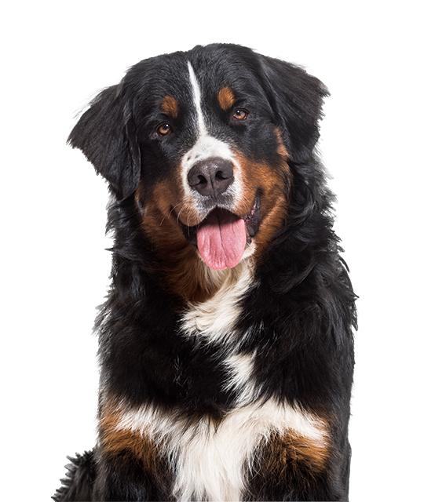
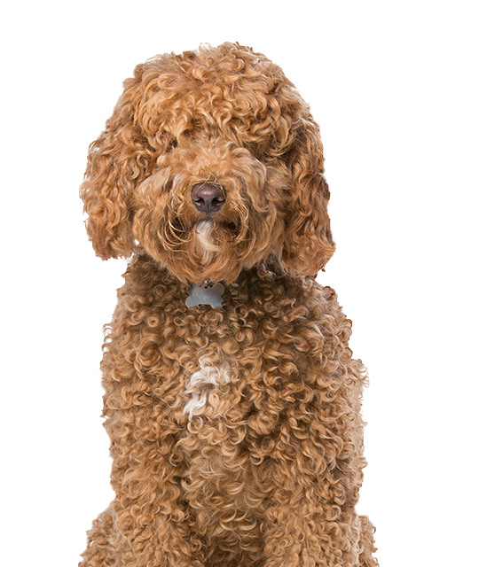
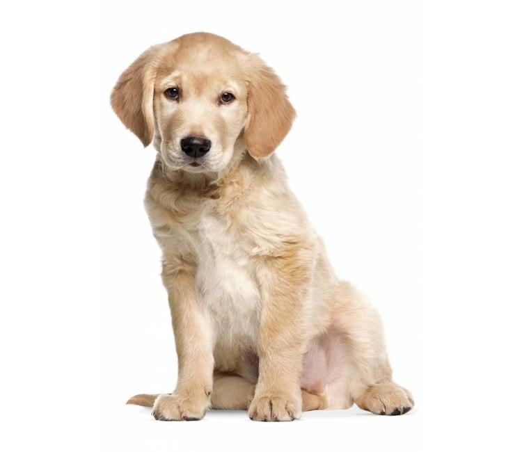

Information Page
Big, powerful, and built for hard work, the Bernese Mountain Dog is also strikingly beautiful and blessed with a sweet, affectionate nature. Berners are generally placid but are always up for a romp with the owner, whom they live to please.
The Bernese Mountain Dog is a large, sturdy worker who can stand over 27 inches at the shoulder. The thick, silky, and moderately long coat is tricolored: jet black, clear white, and rust. The distinctive markings on the coat and face are breed hallmarks and, combined with the intelligent gleam in the dark eyes, add to the Berner’s aura of majestic nobility.
A Labradoodle is a crossbreed dog created by crossing the Labrador Retriever and the Standard, Miniature, or Toy poodle. The term first appeared in 1955, but were not initially popular. Labradoodles are considered a good choice for people with canine dander allergies, since some have the same hypoallergenic coat as their poodle ancestors.
Labradoodles' hair can be anywhere from wiry to soft, and may be straight, wavy, or curly.Some Labradoodles do shed, although the coat usually sheds less and has less "dog odor" than that of a Labrador retriever. Like most Labrador retrievers and poodles, Labradoodles are generally friendly, energetic, and good with families and children.
The Golden Retriever, an exuberant Scottish gundog of great beauty, stands among America’s most popular dog breeds. They are serious workers at hunting and field work, as guides for the blind, and in search-and-rescue, enjoy obedience and other competitive events, and have an endearing love of life when not at work.
The Golden Retriever is a sturdy, muscular dog of medium size, famous for the dense, lustrous coat of gold that gives the breed its name. The broad head, with its friendly and intelligent eyes, short ears, and straight muzzle, is a breed hallmark. In motion, Goldens move with a smooth, powerful gait, and the feathery tail is carried, as breed fanciers say, with a “merry action.”
